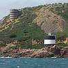

L'Assembliée d'Jèrriais
Rêunion à Nièrmont

 La rêunion mensuelle du 28 dé juillet eut lieu à Nièrmont. I ventait sus la tête, app'lée l'Bec d'Nièrmont par les pêtcheurs d'aut'fais, et nou-s-mînt à l'abri tout près du c'mîn qui mène à la tour.
La rêunion mensuelle du 28 dé juillet eut lieu à Nièrmont. I ventait sus la tête, app'lée l'Bec d'Nièrmont par les pêtcheurs d'aut'fais, et nou-s-mînt à l'abri tout près du c'mîn qui mène à la tour.
Les affaithes c'menchîtent par lé rapport dé la rêunion du mais d'mai et l'sien du service annuel à l'Eglyise dé St. Brélade, et l'êlection dé quatre nouvieaux membres.
Lé Sénateu Romeril, Vice-Président, à rempliaichi l'Député Quérée, qui 'tait hors l'Île, fît la beinv'nue au Professeur Jean-Claude Villequin, un membre dépis tchiques années, et à ses pathents qui 'taient ichîn en vacances.
Lé Sénateu offri des félicitations au sieur Frank Le Maistre sus l'grand honneu qui li avait 'té fait à Lessay, et l'Sieur Le Maistre rêponnit.
Lé discours
Moussieu Ph. Ahier fit un bein întérêssant discours sus Nièrmont - sus l'histouaithe du fief - et dit comment qué, en tchique temps auprès l'année d'la Contchête Nouormande, i' fut passé ès mouaines du Mont St. Michel, qui fîtent bein d's êchanges dé tèrres, et i' restit dans lus mains jusqu'à 1413, quand i' fut r'touanné à la Couronne, et auprès, changi d'mains plusieurs fais, tant et si bein qu'à ch't heu' il appartcheint à l'Île, et est libre pour lé publyique a y passer bein d's heuthes dé pliaîsi.
Lé discours, parmi d'aut' choses mentionnait les drouaix du fief, eune chapelle, un moulîn (tout près d'St. Aubîn), etc., et ché s'sait împossiblye dé faithe un rapport dé toutes les détails car i'y en a tant, et les r'merciêments qui fûtent accordés à Moussieu Ahier 'taient cèrtain'ment bein méthités, car i'y avait ieu bein d's heuthes dé r'cherches et d'prépathâtis à mettre tout ensemblye.
D'la musique

Auprès l'discours, les gens qui 'taient assis sus l'herbe ou dans des tchaîthes qu'il avaient apporté eûtent lé pliaisi d'ouï d'la bouanne musique par la "Band of the Island of Jersey".
La musique finie, un souper fut servi à tous, du café, des p'tits pains, sauasiches, etc., par lé Conmité Dramatique, qui 'tait en chèrge dé la séthée.
Lé Sénateu Romeril ermercyit les musiciens pour être vénus, donner d'si bouanne musique et, sans doute, Mme. Le Sueur et san conmité pour la bouanne séthée et l'souper qué tous aimîtent si bein.
JEP 3/8/1967
Viyiz étout: